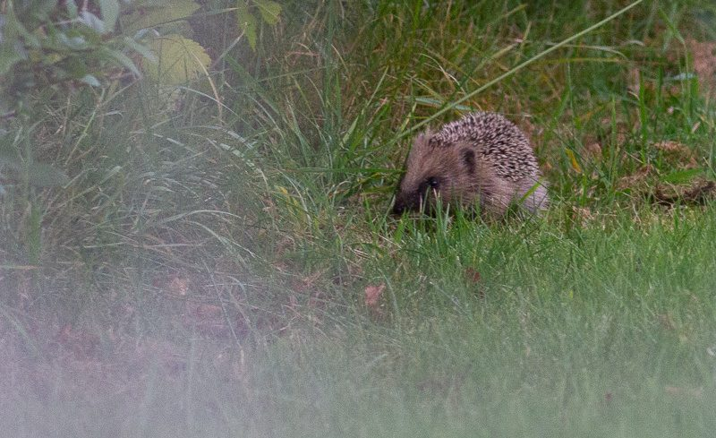

Tijdens de uitvoering
Ecologische begeleiding
Bij een bouwproject of renovatie is ecologische begeleiding vaak verplicht. Wij zorgen dat uw project binnen de natuurwetgeving blijft, van de eerste schop in de grond tot de oplevering.
Direct aanvragenUw ecologische partner tijdens de uitvoering
Een deskundig ecoloog ziet toe op de naleving van de ecologische voorwaarden tijdens uw project. Dit is vaak een verplicht onderdeel van een omgevingsvergunning flora- en fauna-activiteit. Wij controleren of de afgesproken mitigerende maatregelen correct worden uitgevoerd en of beschermde soorten daadwerkelijk worden ontzien.
Denk aan het begeleiden van sloop waarbij vleermuiskasten worden opgehangen, toezien op werken buiten het broedseizoen, het controleren van amfibieënschermen of het instrueren van bouwpersoneel. Pragmatisch: we denken mee, beperken vertraging waar dat kan en helpen u binnen de regels te blijven zonder onnodige bureaucratie.

Waar begeleiding in het traject zit
Ecologische begeleiding is de laatste stap van een traject dat begint bij het bureau en eindigt op de bouwplaats. De quickscan flora en fauna stelt vast welke beschermde soorten een rol kunnen spelen. Is aanwezigheid niet uit te sluiten, dan volgt soortgericht onderzoek om dat vast te stellen. Blijkt een soort daadwerkelijk aanwezig en raakt uw plan die soort, dan volgt een aanvraag voor een omgevingsvergunning voor een flora- en fauna-activiteit. Begeleiding is wat er daarna gebeurt: de voorwaarden uit die vergunning moeten op de bouwplaats ook echt worden nagekomen.
Dat betekent dat begeleiding meestal niet als losse opdracht begint. Wie ons in deze fase belt, heeft doorgaans al een rapport en een vergunning liggen, soms van een ander bureau. Dat is geen bezwaar: wij lezen de voorwaarden en voeren het toezicht uit dat erin staat.
Ook zonder vergunning geldt de zorgplicht
De zorgplicht uit de Omgevingswet geldt bij elk project, ook als er geen beschermde soorten zijn vastgesteld en er dus geen vergunning nodig was. Die plicht komt erop neer dat u nadelige gevolgen voor planten en dieren voorkomt zolang dat redelijkerwijs kan. Bij een sloop waarbij geen verblijfplaatsen zijn aangetroffen, blijft bijvoorbeeld gelden dat u broedende vogels niet mag verstoren, want die bescherming hangt niet aan een vergunning maar aan het broedgeval zelf.
In de praktijk is dat de reden dat ook projecten zonder vergunning begeleiding inschakelen. Niet omdat het moet, maar omdat de zorgplicht wel handhaafbaar is en een stilgelegd werk duurder uitpakt dan toezicht.
Als er tijdens het werk toch iets wordt aangetroffen
Dit is de situatie waar opdrachtgevers het vaakst naar vragen, en het is ook de situatie waarin de meeste fouten worden gemaakt. Komt er tijdens de uitvoering onverwacht een nest, een verblijfplaats of een beschermd dier tevoorschijn, dan is de eerste stap het werk op dat punt stilleggen. Niet het hele project, maar wel de handeling die het dier raakt.
Wat er daarna moet gebeuren hangt af van de soort en van wat er precies is aangetroffen. Soms is verplaatsen mogelijk, soms moet er gewacht worden tot een periode voorbij is, en soms is een aanvullende melding of vergunningaanvraag nodig. Wij beoordelen dat ter plaatse en leggen de bevindingen vast, zodat u tegenover het bevoegd gezag kunt aantonen wat er is aangetroffen en hoe daarop is gehandeld. Dat laatste is bij een handhavingsvraag doorslaggevend: niet of er iets is gevonden, maar of er aantoonbaar naar is gehandeld.
Voor de bouwploeg betekent het dat er één afspraak moet liggen, en die is eenvoudig: bij twijfel niet doorwerken maar bellen. Die afspraak nemen wij op in de instructie aan het begin van het werk.
Wie het toezicht mag uitvoeren
Vergunningsvoorwaarden schrijven vrijwel altijd voor dat het toezicht wordt gedaan door een deskundig ecoloog. Wat daaronder valt is niet in één landelijk register vastgelegd, en dat leidt in de praktijk tot onduidelijkheid. Het bevoegd gezag kijkt naar aantoonbare kennis van en veldervaring met de soort waar het om gaat, en dat verschilt dus per project: iemand die vleermuiswerk doet is daarmee niet vanzelfsprekend de aangewezen persoon voor een das of een beschermde plantensoort.
Twijfelt u of degene die u wilt inzetten aan de voorwaarde voldoet, leg ons de vergunningtekst dan voor. Dat is een korte controle en het voorkomt dat de oplevering achteraf op dit punt strandt.
Onze begeleiding omvat
Toezicht op de vergunning
Controle op naleving van de vergunningsvoorwaarden tijdens de uitvoering.
Instructie van personeel
Uitleg en bewustwording van de bouwploeg over beschermde soorten op de bouwplaats.
Controle van maatregelen
Toezicht op de correcte plaatsing van mitigerende maatregelen, zoals kasten en schermen.
Monitoring
Het volgen van aanwezige beschermde soorten tijdens de bouwfase.
Ecologisch werkschrift
Een praktisch document voor op de bouwplaats. Vaak verplicht, wij stellen het voor u op.
Opleveringsrapportage
Een rapportage voor het bevoegd gezag, zoals de Omgevingsdienst, na afronding.
Wanneer is begeleiding nodig?
Sloopwerk
Bij sloop waar beschermde soorten zijn vastgesteld. Wij controleren of alle dieren vertrokken zijn en of alternatieve verblijfplaatsen correct zijn aangebracht.
Kapwerk
Bij kap van bomen met vleermuisverblijven of jaarrond beschermde nesten. Toezicht op de kapmethode en het aanbrengen van kasten.
Grond- en waterwerk
Bij dempen van watergangen met beschermde amfibieën of vissen. Wij zorgen voor het veilig wegvangen en verplaatsen vóór de start.
Infrastructuur en aanleg
Bij aanleg nabij natuurgebieden: verstoring voorkomen in kwetsbare periodes en effecten op de omgeving monitoren.
Veelgestelde vragen
Wanneer is ecologische begeleiding bij een bouwproject verplicht?
Meestal als er een omgevingsvergunning voor een flora- en fauna-activiteit is verleend. Daarin staan voorwaarden waaraan tijdens de uitvoering moet worden voldaan, en vrijwel altijd hoort daar toezicht door een deskundig ecoloog bij. Ook zonder vergunning kan begeleiding nodig zijn: de zorgplicht geldt bij elk bouwproject, ook als er geen beschermde soorten zijn vastgesteld.
Wat doet een ecoloog op de bouwplaats?
Controleren of de afgesproken maatregelen kloppen en werken: zijn de vervangende verblijfplaatsen op de juiste plek en op tijd aangebracht, wordt er buiten het broedseizoen gewerkt, staan de schermen goed. Daarnaast instrueren wij de bouwploeg, zodat mensen op de bouwplaats weten waar ze op moeten letten en wat ze moeten doen als ze onverwacht een dier of nest aantreffen.
Betekent begeleiding dat mijn bouwproject stil komt te liggen?
Nee. Het doel is juist het omgekeerde: door vooraf te weten wat er moet gebeuren en wanneer, voorkomt u dat het werk halverwege wordt stilgelegd. Wij denken mee over de volgorde en de planning, zodat het toezicht meeloopt met de uitvoering in plaats van ertegenin.
Wat is een ecologisch werkschrift?
Een praktisch document voor op de bouwplaats waarin staat welke soorten in het geding zijn, welke maatregelen gelden en wie wat doet. Het is vaak een verplicht onderdeel van de vergunning. Wij stellen het op en houden het actueel als het werk verandert.
Wij hebben het onderzoek door een ander bureau laten doen. Kunt u de begeleiding overnemen?
Ja. Wij lezen het rapport en de vergunningsvoorwaarden en voeren daarop het toezicht uit. U hoeft het onderzoek niet over te laten doen. Wel kijken wij eerst of de voorwaarden uitvoerbaar zijn zoals ze er staan, want een voorwaarde die op papier logisch klinkt kan op de bouwplaats botsen met de volgorde van het werk. Blijkt dat zo, dan is het beter dat vooraf te weten dan halverwege.
Wat gebeurt er als er tijdens het werk alsnog een beschermde soort opduikt?
Het werk op dat punt gaat stil, niet het hele project. Wij beoordelen ter plaatse om welke soort het gaat en wat er nodig is: verplaatsen, wachten tot een periode voorbij is, of een aanvullende aanvraag. De bevindingen en de genomen stappen leggen wij vast. Bij een latere vraag van het bevoegd gezag is dat vastleggen belangrijker dan de vondst zelf.
Hoe vaak komt de ecoloog langs?
Dat volgt uit de vergunningsvoorwaarden en uit de aard van het werk. Soms gaat het om enkele momenten die vastliggen, zoals de controle vlak voor de sloop en de controle van de aangebrachte voorzieningen. Bij langer lopend werk in een kwetsbare periode zijn het er meer. Wij zetten het aantal momenten en de aanleiding ervoor in de offerte, zodat u weet waar u aan toe bent voordat het werk begint.
Geldt ecologische begeleiding ook bij beheer en onderhoud?
Ja, al ziet het er dan anders uit. Bij bestendig beheer en onderhoud werkt u meestal onder een goedgekeurde gedragscode in plaats van onder een vergunning. Die gedragscode stelt eigen eisen aan de uitvoering en aan de controle vooraf. Voor terugkerend werk langs watergangen en groenstroken is dat de gebruikelijke route; zie ook de flora- en faunacheck.
Ecologische begeleiding aanvragen
Vul in wat u van plan bent en waar. Hoe vollediger het beeld, hoe gerichter ons voorstel. Wij reageren binnen 24 uur met een vrijblijvende offerte of met een vraag als er nog iets ontbreekt.
Liever niet via een formulier? Mail ons op info@vanderhamecologie.nl, of stel eerst uw vraag via de contactpagina.